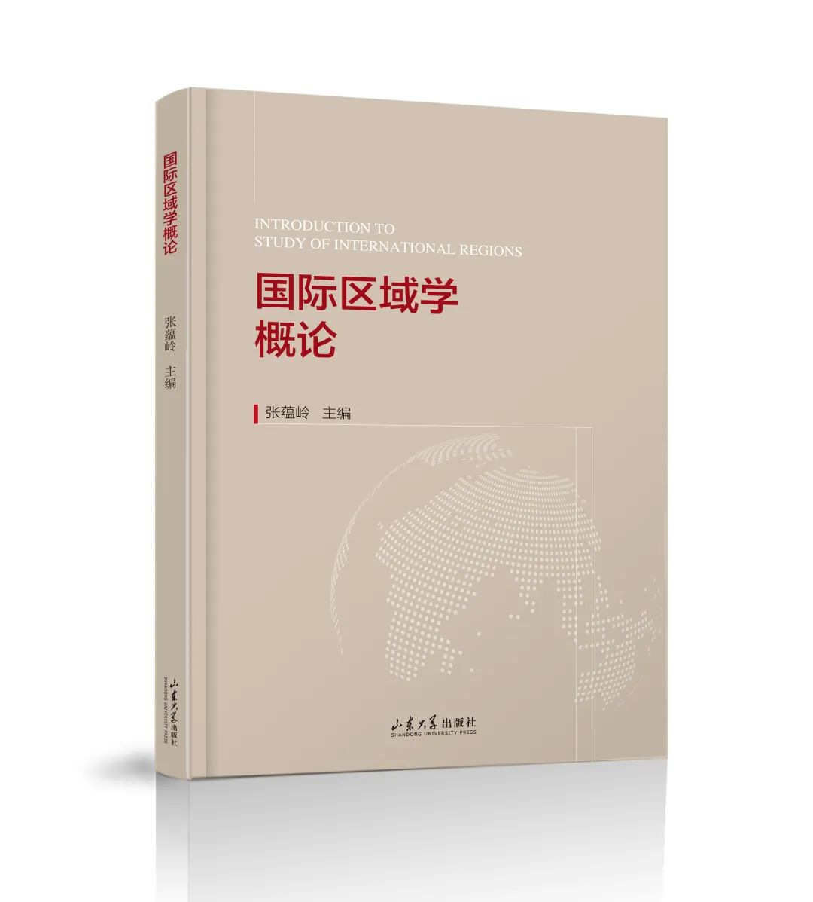

收录于合集

内容介绍
《国际区域学概论》是“区域国别学丛书”的 首部著作， 也是 国内外第一部对国际区域问题进行理论性、综合性研究的专著。 在本书中，作者为读者提供了一个整体与系统的分析框架，对国际区域的含义、构成、研究对象、方法等进行了清晰的定位，对构成国际区域的区域观、国家与区域、区域政治、区域经济、区域文化、区域关系、区域合作和区域治理等各方面进行了深入、独到的分析。其中穿插大量的经典案例，为本书的理论阐释作了有力的注解。读罢本书，相信您对“国际区域是什么”“国际区域是怎样构成的”“国际区域是如何运行的”等问题会有一个清晰、全面的认识。 本书可作为大学教学、国际问题理论研究以及政府、企事业单位涉外工作的基础教材、专业研读和培训参考用书。
《国际区域学概论》积张蕴岭先生数十年理论探索和实践研究之功力，其出版堪称中国国别和区域研究学科化进程中的一个重要标志性事件，这一具有明确理论关怀的“扛鼎之作和奠基之作”的出版将弥补当前中国国别和区域研究人才培养中的短板，成为未来政治学、文学和法学等学科门类开展国别和区域研究人才培养的重要依托。

《国际区域学概论》
作者：张蕴岭 主编
出版社：山东大学出版社
ISBN: 978-7-5607-7286-8
定价：58元
主编简介
张蕴岭，中国社会科学院学部委员，山东大学讲席教授、国际问题研究院院长、东北亚学院学术委员会主任。张蕴岭教授是国内外著名国际问题专家，获国家有突出贡献专家称号；曾任中国社会科学院亚太研究所所长，国际研究学部主任，中国亚太学会会长；第十、十一、第十二届全国政协委员、外事委员会委员；东亚展望小组成员、中国—东盟合作官方专家组成员、中韩联合专家委员会中方执行主席，中日21世纪友好委员会委员等。张蕴岭教授的主要代表著作有：《中国与亚洲区域主义》（英文），《中国与世界：新变化、新认知与新定位、构建开放合作的国际环境》，《寻求中国与世界的良性互动》，《在理想与现实之间——我对东亚合作的研究、参与和思考》（2015年，中、英、韩文）。最新代表著作是《百年大变局：世界与中国》（2020年）、《世界大势》（2021年），《国际区域学概论》（2022年）。
本期目录
第一章 国际区域学基础
第一节 国际区域学及研究对象
第二节 国际区域属性与关系结构
第三节 国际区域学框架
第二章 国际区域观的形成与发展
第一节 国际区域观认知的演变
第二节 地缘战略下的国际区域定位
第三章 国别与区域
第一节 作为本位的国家
第二节 国际区域的构成
第三节 国际区域定位
第四章 国际区域政治
第一节 国家政治是国际区域政治的基础
第二节 国际区域政治与区域制度建构
第三节 区域安全与安全合作
第五章 国际区域经济
第一节 区域经济连接
第二节 区域经济机制
第三节 区域经济分工
第六章 国际区域文化
第一节 国际区域文化联系
第二节 国际区域文化历史传承
第三节 国际区域文化认同
第七章 国际区域关系
第一节 国际区域关系构成
第二节 国际区域关系特征
第三节 区域外部关系
第八章 国际区域合作
第一节 区域合作的动机
第二节 区域经济一体化构建
第三节 区域合作制度的构建
第九章 国际区域治理
第一节 国际区域治理问题
第二节 区域治理合作的动机
第三节 区域治理与全球治理
第十章 国际区域构建实践与研究
第一节 国际区域构建的发展
第二节 国际区域的研究和理论
第三节 中国的区域合作实践
购书途径
天猫店购书二维码
赠书福利
请参与本次活动的读者点亮“ 在看 ”、转发本文至微信朋友圈（请勿分组和提前删除），并于 4月6日12：00 前 将截图发送至“ 国小政 ”（扫下方二维码添加好友），将获得本次新著推荐的抽奖资格。

（助手“国小政”）
排版 | 柴昕彤
策划 | 吕紫烟 姚寰宇
感谢山东大学出版社对国政学人本次活动的支持！